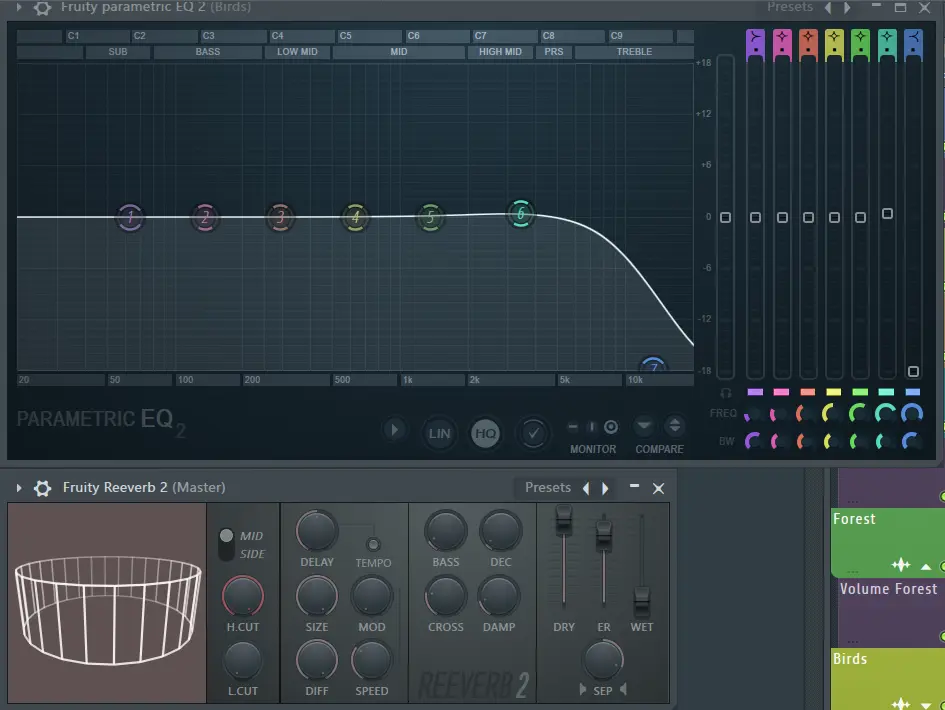

Ambient track
A short ambient track I made.
In some ways I still consider myself a beginner here, because there is a lot left to learn. Even so, I can use FL Studio 20 to make soundtracks for video games and many other things.
A short ambient track I made.
A synthwave piece I made.
I know how audio plugins work, so I can shape sounds with reverb, delay, EQ and other effects for any project.


I can also DJ. It's more of a personal hobby, but it's closely related to what I've learned by studying music and sound on my own.